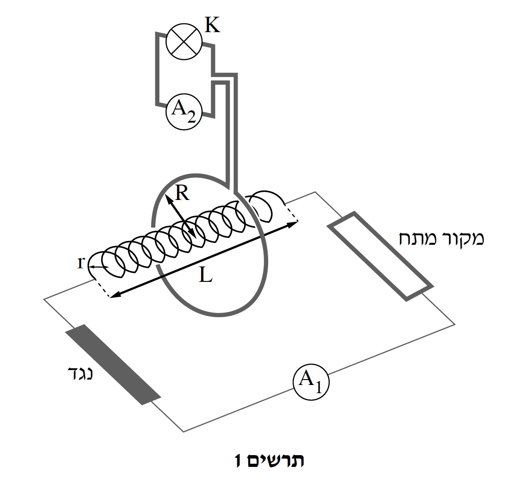
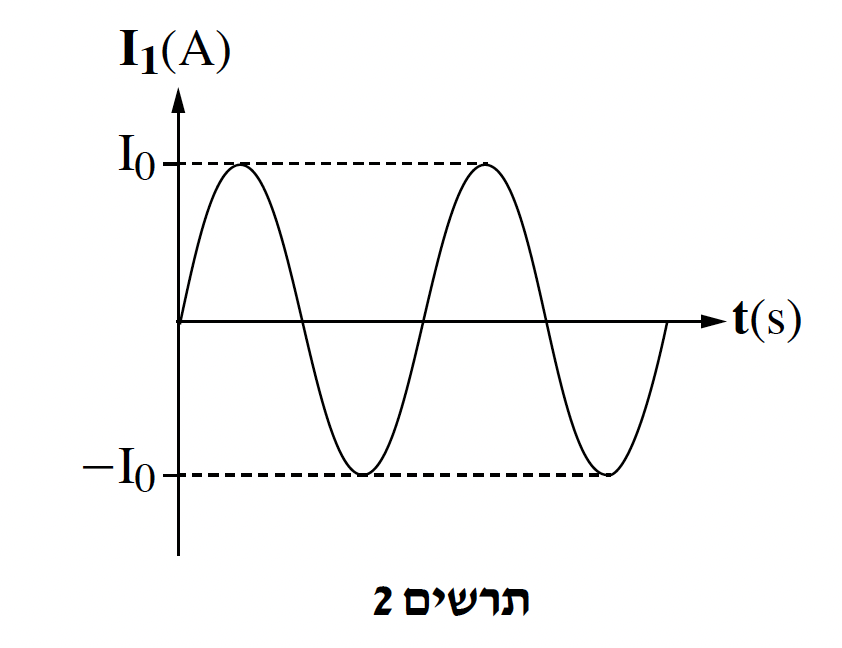
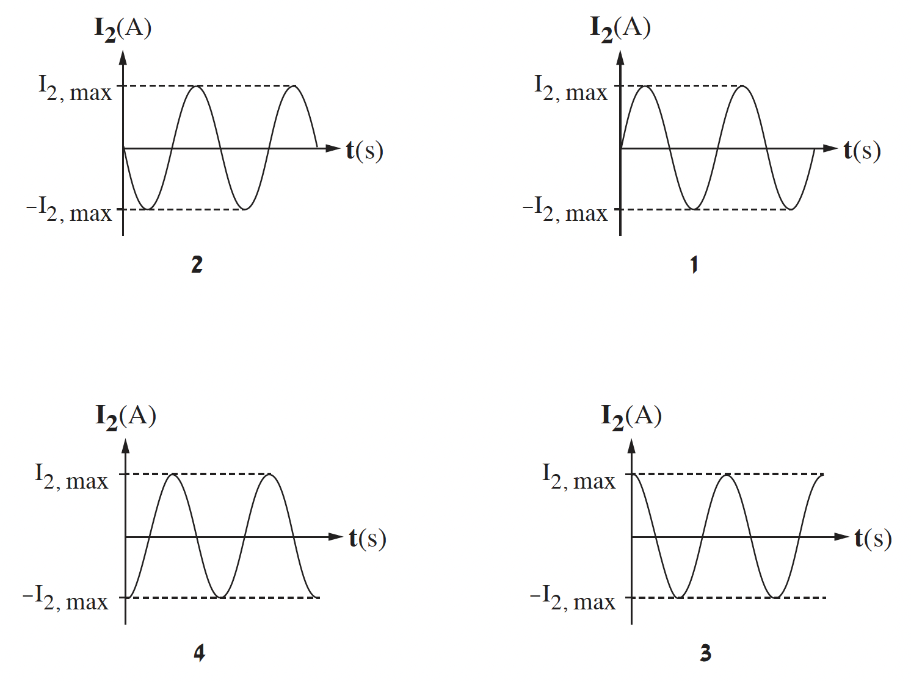

תלמידי פיזיקה הרכיבו מעגל חשמלי ובו מקור מתח, סילונית ארוכה, נגד, מד זרם אידיאלי A1 ותיילים אידיאליים.
רדיוס הסילונית הוא r, אורכה L ומספר הליפופים בה הוא N. התלמידים הציבו טבעת מוליכה שרדיוסה R סביב הסילונית (R > r). הטבעת ממוקמת באמצע הסילונית, כך שציר הסילונית מאונך למישור הטבעת ועובר דרך מרכזה (ראו תרשים 1). התנגדותה של הטבעת המוליכה זניחה.
התלמידים חיברו לטבעת המוליכה מד זרם אידיאלי A2 ונורה K בעלת התנגדות קבועה.
בתרשים 2 שלפניכם מתוארת באופן איכותי עוצמת הזרם I1 בסילונית כתלות בזמן. הכיוון החיובי של הזרם מוגדר עם כיוון מחוגי השעון.
I1(t)=I0 sin(ωt) הוא הביטוי האלגברי המתאר את עוצמת הזרם I1 כתלות בזמן.


לפניכם טענה: "הנורה אינה דולקת, מאחר שהטבעת המוליכה אינה נמצאת בשדה המגנטי הנוצר בסילונית".
קבעו אם הטענה נכונה או שגויה. ונמקו את קביעתכם. (5 נקודות)

לפניכם ארבעה גרפים 1 - 4 המתארים עוצמת זרם כפונקצייה של זמן.
קבעו איזה מן הגרפים מתאר בצורה הטובה ביותר את עוצמת הזרם I2 בטבעת המוליכה כפונקצייה של הזמן.
נמקו את קביעתכם בעזרת חוק פאראדיי-לנץ. (6 נקודות)
הראו שהביטוי המתאר את ε2,max, הכא"מ המושרה המרבי (המקסימלי) בטבעת המוליכה, הוא -
(9 נקודות)
נתון: ω = 314 s−1, I0 = 2.42 A.
רדיוס הסילונית הוא r = 10 cm, וצפיפות הליפופים בה היא NL = 4000 m−1.
רדיוס הטבעת הוא R = 12 cm.
ערך המתח הרשום על הנורה K הוא 3V.
התלמידים רוצים שהמתח המרבי ε2,max על הנורה יתאים לערך הרשום עליה. הם מצאו כי באמצעות הציוד שברשותם המתח ε2,max קטן מדי.
התלמידים הציעו שתי הצעות שונות כיצד להגדיל את המתח המרבי כך שיתאים לערך הרשום על הנורה.
ההצעה הראשונה הייתה להגדיל את מספר הכריכות בטבעת המוליכה, Nטבעת, בלי לבצע שינויים נוספים.
מצאו את מספר הכריכות Nטבעת הדרוש כדי להשיג את המטרה.
(8 נקודות)
ההצעה השנייה הייתה להחליף את הסילונית בסילונית ארוכה אחרת בעלת אותה צפיפות ליפופים NL אך עם רדיוס r גדול יותר מרדיוס הטבעת R (הטבעת תימצא כולה בתוך הסילונית), בלי לבצע שינויים נוספים.
התלמידים טענו שעבור רדיוס סילונית גדול מספיק, המתח על הנורה יתאים לערך הרשום עליה.
הסבירו מדוע טענה זו אינה נכונה.
(513 נקודות)